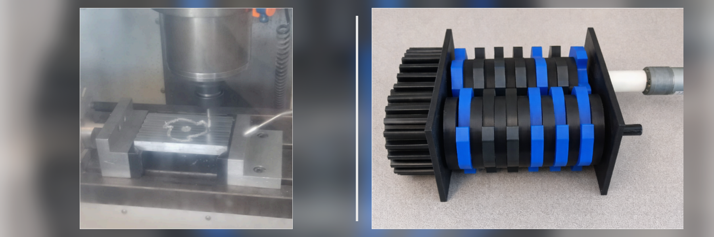

Project
Design and build a functional prototype of a small-scale mechanical shredder capable of fragmenting material using rotating blades.
The system design was developed using CAD, including stress analysis and component assembly. Structural parts were manufactured by 3D printing. An electric motor was integrated to drive the blades. Later, a metal blade was designed and machined by CNC to improve system durability. The prototype was assembled and tested.
CAD assembly of the shredder, fabrication of components by 3D printing, CAM creation for the aluminum blade, CNC machining of the metal blade, and final assembly.
A functional prototype with a motor-driven crushing system was obtained.